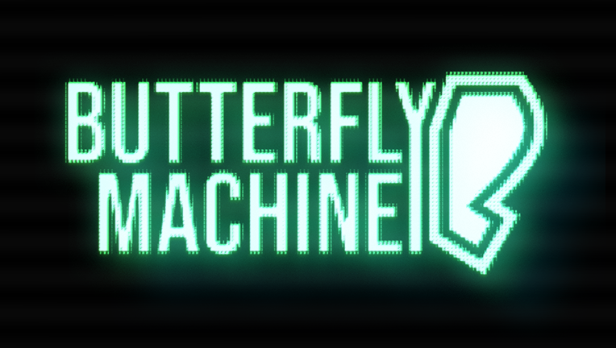
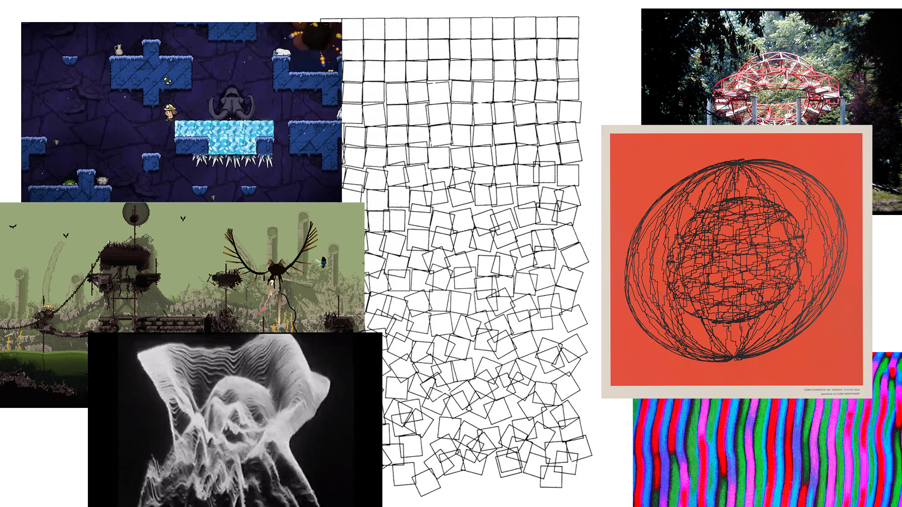
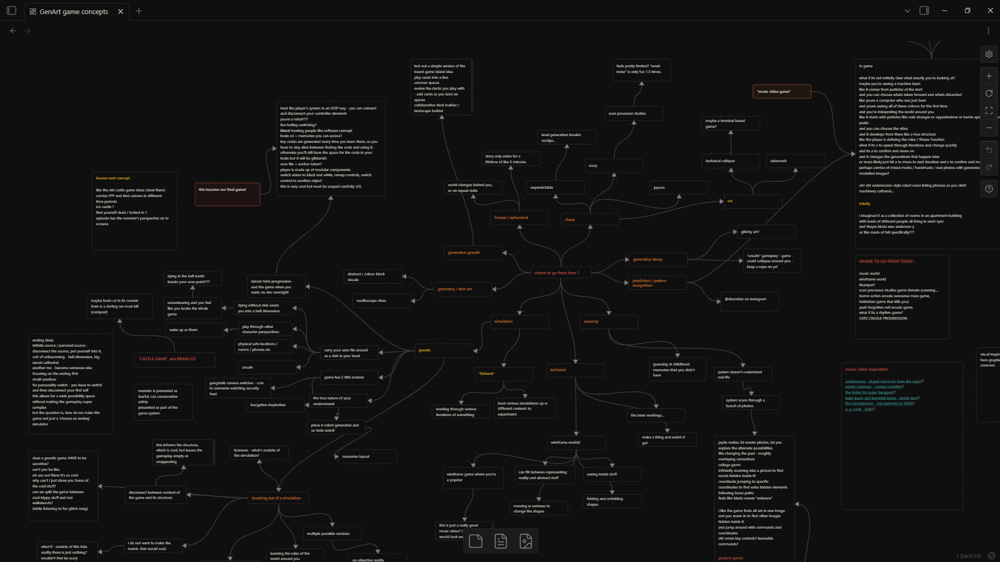
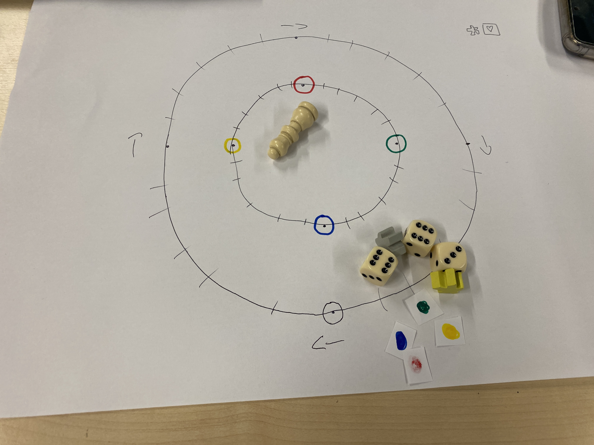
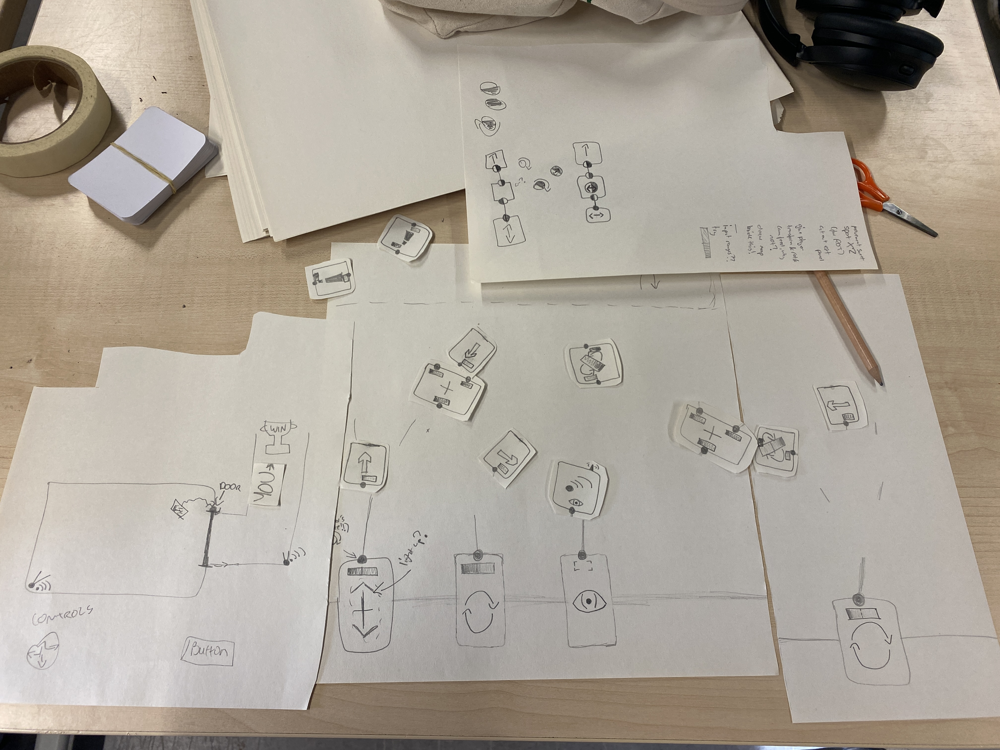

Jaydn's lovely key art, and our game trailer (edited by me!)
Butterfly Machine is a 3D puzzle game about a robot learning to reprogram itself.
I was responsible for the game design, direction, and programming, and also contributed some sound effects.
It was developed from December 2024 to May 2025 alongside Jaydn Jones, and features soundscapes from musician Ralph Banks. You can download the game for free on itch.io!
I filmed and edited a short documentary about the game's design and development.
Our final university projects were inspired by external research: I chose to examine generative art, much of which uses digital logic to emulate organic structures and behaviour, emphasising faults in the systems to make the synthetic seem natural.

I looked into traditional line printer artworks, video synthesis, and modern implementations of generative logic in games such as Rain World and Spelunky.
I became interested in exploring player fragility in gameplay: could I tell a story by allowing the player to meddle with their internal systems? Can we give the player a tactile sense of responsibility over their life? Thus, we landed on the final pitch of having the player control a robot and modify its internal logic.

A mindmap of initial GenArt-inspired game concepts, including spooky photo-investigations, playable montage music videos, and nesting realities.
We used paper prototypes to nail down the design's opportunities and threats: we conducted a playtest that required the player to "sacrifice" their safety net in order to progress, this taught us that players can only feel good making "out-of-the-box" choices when they feel that it's truly their choice, which pushed us further into making a game about an open, "laissez-faire" system.

A simple paper prototype built to investigate players' approaches to self-sacrifice as a puzzle mechanic.
I also tested an early paper version of the game's programming mechanics, inspired by node-based visual scripting systems. It turned out that players enjoyed experimenting with the system even when just dealing with basic mechanics: our game was enjoyable just on paper!

A rough paper prototype testing the game's basic wiring mechanics: I had to ensure that experimenting with the system was fun before I committed to building it.
Jaydn and I then set out to carefully define our design pillars into a Game Project Proposal. We first defined the themes that we wanted the design to convey, and translated them into our design pillars:
We also created three "philosophies" that helped us structure the experience:
So! Our goal was to create an open system, where the player could control their avatar completely, and use that to create tension.